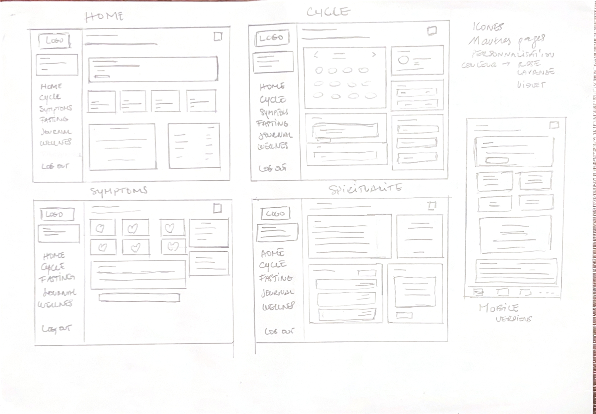
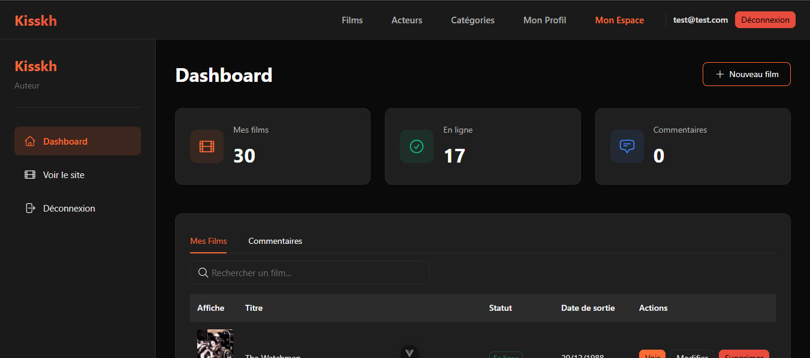

Je développe des applications web performantes et des expériences fluides.
Étudiante en fin d'études de BUT MMI (Parcours Développement Web et Dispositifs Interactifs) à l'IUT de Troyes. J'allie le développement back-end à la création d'interfaces intuitives et agréables à utiliser.
Étudiante en BUT3 parcours développement web et dispositifs interactifs
BUT3 DWD — IUT Troyes
GitHub: @niniallx
PROFIL TECHNIQUE
Allier développement web et expérience utilisateur.
Actuellement en dernière année de BUT Métiers du Multimédia et de l'Internet, Je conçois et développe des applications web durables, en prenant en charge chaque étape du projet.
Ma formation me permet d'aborder aussi bien les bases de données que le développement back-end (Symfony 7, PHP, MYSQL) et sur le développement d'interfaces fluides et ergonomiques en s'appuyant sur des composants modernes (Vue.js 3, Tailwind CSS).
Symfony 7Vue.js 3PHPSQLAPI REST & JWTDocker
RÉALISATIONS PROFESSIONNELLES
Mes Projets
Consulter l'étude de cas
SYS. Rappel
Stage BUT3 · Terminé
Plateforme de relance et suivi
RJ10 Rappel
Application de rappel automatique pour le renouvellement des certifications professionnelles.
Application de suivi d'échéances et de notifications automatisées de renouvellement développée chez RJ10 Formation.
DévelopperConcevoirEntreprendreComprendre
01
Introduction et contexte
Dans le cadre de ma troisième année de BUT Métiers du Multimédia et de l'Internet (MMI) à l'IUT de Troyes, j'ai effectué un stage de neuf semaines, du 23 mars au 22 mai 2026, au sein de RJ10 Formation, un centre de formation aux métiers de la sécurité situé à La Chapelle-Saint-Luc, dans l'Aube. Ce centre propose des formations professionnelles telles que l'APS (Agent de Prévention et Sécurité), le SSIAP (Sécurité Incendie) et le SST (Sauveteur Secouriste du Travail). J'ai travaillé en totale autonomie sur ce projet, sans équipe technique autour de moi, ce qui m'a demandé une organisation rigoureuse et une grande capacité à prendre des décisions seule.
02
La mission
Mon superviseur, José Pereira, m'a fait part d'un besoin précis dès le début du stage. Le centre utilisait déjà Digiforma, un logiciel professionnel complet qui permet aux organismes de formation de gérer leurs documents administratifs, leur relation client, leurs sessions de formation et leur suivi qualité. Malgré sa richesse, cet outil présentait un angle mort : il ne permettait pas de relancer automatiquement les anciens stagiaires lorsque leur titre professionnel approchait de sa date d'expiration.
C'est ce manque précis qui est à l'origine du projet. Concrètement, lorsqu'un stagiaire obtient son titre professionnel, celui-ci a une durée de validité limitée : 5 ans pour une carte professionnelle APS, 3 ans pour un SSIAP, 2 ans pour un SST. Sans système de suivi, le centre perdait le contact avec ses anciens stagiaires qui, faute de rappel, oubliaient de renouveler leur titre ou allaient se former ailleurs.
Motivée par l'envie de répondre concrètement à ce besoin, j'ai analysé les limites de l'outil existant et proposé une solution complémentaire adaptée : une application web de gestion de rappels automatiques, pensée spécifiquement pour ce centre. Ma mission était donc de concevoir et développer cet outil de A à Z, permettant de gérer les stagiaires, de suivre leurs formations et d'envoyer automatiquement des emails de rappel avant l'expiration de leur titre. L'objectif était simple : fidéliser les anciens stagiaires et les inciter à renouveler leur certification au sein du même centre plutôt qu'ailleurs.
Traces de développement (Cliquer pour zoomer)
Agrandir
Agrandir
Agrandir
Agrandir
Agrandir
Agrandir
Agrandir
Agrandir
03
Étapes du processus de création
1. Analyse des besoins et compréhension du métier
Avant de commencer à construire quoi que ce soit, j'ai pris le temps de comprendre le fonctionnement réel du centre et de ses formations. J'ai découvert que chaque type de formation obéit à des règles très différentes. Par exemple, seul l'APS nécessite une autorisation préalable délivrée par le CNAPS. SST est obligatoire pour pouvoir s'inscrire à d'autres formations comme l'APS ou le SSIAP. Comprendre ces règles métier était indispensable.
2. Organisation et architecture de l'application
J'ai défini que l'accès se ferait via une page de connexion sécurisée, puis que l'administrateur arriverait sur un tableau de bord central depuis lequel il pourrait accéder à d'autres espaces : la gestion des stagiaires, le catalogue des formations, les inscriptions, l'historique des rappels et les paramètres d'envoi.
3. Construction de la partie invisible de l'application
J'ai ensuite construit la partie back-end avec Symfony 7. Concrètement, j'ai mis en place un système de connexion sécurisé, une base de données pour stocker toutes les informations, ainsi qu'un programme automatique (Cron) qui se déclenche pour détecter les titres expirants.
4. Construction de l'interface visuelle
J'ai ensuite créé la partie visible de l'application avec Vue.js 3. L'interface comprend un tableau de bord global, un espace de gestion des profils des stagiaires, l'historique complet des sessions, etc. L'administrateur peut également forcer un rappel d'email manuellement en un clic.
5. Gestion des situations complexes
Au fil du développement, j'ai rencontré des situations complexes. Par exemple, un même stagiaire peut avoir suivi plusieurs formations différentes à des périodes distinctes, chacune avec sa propre validité. J'ai également dû intégrer la notion de prérequis entre formations.
Comment ça fonctionne ? (Logique Technique)
Étape 1 : Le serveur lance une tâche planifiée automatique quotidiennement.
➔
Étape 2 : Le programme recherche en base de données les stagiaires dont la certification expire dans exactement 3 mois.
➔
Étape 3 : Le système génère un email personnalisé via Symfony Mailer et l'envoie de manière asynchrone.
public function execute(InputInterface $input, OutputInterface $output): int {
$stagiaires = $this->stagiaireRepository->findExpiringInMonths(3);
foreach ($stagiaires as $stagiaire) {
$this->mailer->sendRappel($stagiaire);
$this->logRappel($stagiaire);
}
return Command::SUCCESS;
}
04
Difficultés rencontrées
La principale difficulté a été de travailler seule sans interlocuteur technique. Lorsque je bloquais, je m'appuyais sur mes propres recherches et l'IA comme assistante pour explorer des pistes de solution.
J'ai également eu du mal à clarifier certaines règles métier au départ, notamment la distinction entre la période de formation et la durée de validité du titre obtenu. C'est en échangeant avec mon superviseur et en clarifiant la logique avec l'IA que j'ai pu avancer.
05
Bilan personnel
1. Ce que ce projet m'a apporté
Ce stage m'a appris que construire une application ne se résume pas au code. Comprendre le métier du client et bien modéliser en amont sont des étapes primordiales.
2. Les compétences développées
Gérer un projet numérique de A à Z en totale autonomie dans un contexte professionnel réel m'a donné de l'assurance et une méthodologie solide.
3. Ce que je ferais différemment
J'accorderais encore plus de temps à la phase d'analyse métier au départ pour éviter des ajustements de structure en cours de développement.
Projet Personnel Inédit · En ligne
Noor — Application de bien-être féminin & santé
Application web progressive (PWA) croisant suivi biologique et pratique cultuelle personnalisée.
DévelopperConcevoirEntreprendreComprendreExprimer
01
Introduction et contexte
Dans le cadre du module PTUT de ma troisième année de BUT MMI, j'ai conçu et développé Noor ("lumière" en arabe). Ce projet démontre ma capacité à entreprendre de bout en bout.
Noor est destinée aux femmes souhaitant concilier suivi biologique et pratique spirituelle. Le constat initial : les app de cycle ignorent la dimension spirituelle, et inversement. Le projet est accessible sur Noor App.
Compte de démonstration :
Email : yasmine@exemple.com
Mot de passe : yasmine123
02
La problématique
Comment concevoir une application de santé féminine qui prend en compte non seulement les données physiologiques, mais aussi les pratiques culturelles et spirituelles des utilisatrices, en proposant un accompagnement personnalisé et automatiquement adapté selon leur situation du moment ?
03
Comment fonctionne Noor
Noor est construite en deux parties distinctes (API REST Symfony 7 / Front-end réactif Vue.js 3). Le serveur calcule automatiquement la phase du cycle et ajuste l'affichage des rituels ou le calcul du jeûne à rattraper. Noor se connecte également à des services externes pour récupérer dynamiquement les horaires de prière locaux par ville et des textes inspirants.
Interface de l'application Noor (Cliquer pour zoomer)
Agrandir
Agrandir

Agrandir
Agrandir
04
Étapes de conception & réalisation
1. Recherche et analyse des besoins
Analyse des applications existantes (Flo, Clue, Taahirah) pour identifier les manques et bâtir Noor sur un besoin réel au sein de la communauté.
2. Conception de la structure de données
Modélisation relationnelle de 6 entités clés interconnectées. Gestion du recalcul automatique du jeûne lors des entrées menstruelles.
Arborescence, wireframe et maquette — Plan Poitrines
Conception UX/UI complète de l'architecture d'information sur Figma.
ComprendreEntreprendreConcevoirExprimer
01
Introduction et contexte
Dans le cadre de mon stage de BUT2 au sein de l'association Plan Poitrines (collectif féministe et queer), j'ai mené toute la phase UX/UI pré-intégration. Travailler sur des wireframes et prototypes interactifs était indispensable pour valider l'expérience collectivement avec les co-présidentes.
Traces du processus de maquettage (Cliquer pour zoomer)
Agrandir
Agrandir
Agrandir
Agrandir
Intégration Web · Stage BUT2
Création du site vitrine — Plan Poitrines
Développement web natif sans CMS d'un site vitrine léger, fluide et documenté.
DévelopperEntreprendreComprendreExprimer
01
Contexte technique
Développement sur-mesure en HTML5/CSS3 natif sans CMS complexe pour offrir un produit final ultra-léger et facilement modifiable par les bénévoles.
Projet Pro · Solidarité
Association ACM (Ike Oluwa)
Refonte globale de la plateforme d'action sociale interculturelle de l'association ACM (Ike Oluwa).
DévelopperConcevoirEntreprendreComprendre
01
Contexte du projet
Développement back-end complet d'une plateforme d'entraide, de suivi des maraudes et de mise en relation de parrainages interculturels.
Projet Universitaire · S5
WR506D — API REST & GraphQL — Gestion de films
Architecture back-end complète et interface de recherche développées en totale autonomie (S5 BUT MMI).
DévelopperConcevoirComprendreExprimer
Traces du projet WR506D (Cliquer pour zoomer)
Agrandir
Agrandir
Agrandir
Agrandir

Projet Universitaire · S6
WR602D — Micro-service de génération de PDF & abonnements
Développement et déploiement d'un micro-service PDF Gotenberg intégré à une application de gestion d'abonnements Stripe.
DévelopperEntreprendre
Traces et démonstrations (Cliquer pour zoomer/lire)